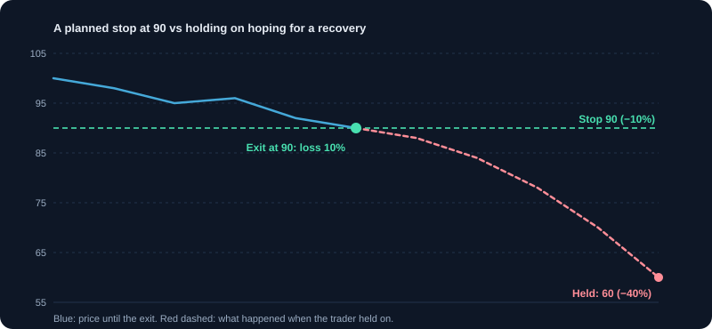

ट्रेडिंग मनोविज्ञान
डर, लालच और ओवरट्रेडिंग जैसे पूर्वाग्रह पहचानें और अनुशासित प्रक्रिया बनाएँ।
1. मनोविज्ञान नतीजे क्यों तय करता है
ज़्यादातर ट्रेडिंग योजनाएँ इसलिए विफल नहीं होतीं कि तरीका ग़लत है, बल्कि इसलिए कि ट्रेडर उसका पालन नहीं करता। डर आपको जीतने वाले ट्रेड जल्दी बेचने और घाटे वाले रखने पर मजबूर करता है। लालच जीत के बाद साइज़ बढ़वाता है। झुंझलाहट नुकसान की भरपाई के पीछे भगाती है। इन पैटर्न को जानना और उनके ख़िलाफ़ आदतें बनाना उतना ही ज़रूरी कौशल है जितना विश्लेषण।
2. आम पूर्वाग्रह उदाहरणों के साथ
- हानि से बचाव (loss aversion): नुकसान लगभग बराबर के लाभ से दोगुना दर्दनाक लगता है। उदाहरण: ₹100 पर ख़रीदा शेयर ₹90 के योजनाबद्ध स्टॉप पर बेचने के बजाय ₹80 पर होल्ड करते हैं, और वह ₹60 तक गिरता है।
- अति-आत्मविश्वास: कुछ जीत के बाद लगता है कि आप माहिर हैं, और साइज़ बढ़ा देते हैं या नियम छोड़ देते हैं।
- हाल की घटनाओं का असर (recency bias): मान लेते हैं कि ताज़ा ट्रेंड चलता रहेगा, और लंबा इतिहास भूल जाते हैं।
- पुष्टि पूर्वाग्रह (confirmation bias): केवल वही ख़बर पढ़ते हैं जो आपकी पोज़िशन का समर्थन करे।
- FOMO (कुछ छूट जाने का डर): चाल के बाद पीछा करते हैं, और चोटी के पास ख़रीदते हैं।
- एंकरिंग: किसी कीमत, जैसे आपकी ख़रीद कीमत, पर अटक जाते हैं, और फ़ैसले उसी से परखते हैं, मौजूदा जानकारी से नहीं।
3. नतीजे से ज़्यादा प्रक्रिया
एक अच्छा फ़ैसला पैसा खो सकता है, और एक ख़राब फ़ैसला एक ट्रेड में पैसा कमा सकता है। कई ट्रेड में प्रक्रिया नतीजा तय करती है। हर ट्रेड को इस आधार पर परखें कि क्या आपने योजना का पालन किया और क्या योजना सही थी, इस आधार पर नहीं कि वह जीता या नहीं। वरना आप बुरे दौर में अच्छे नियम बदल देंगे, और भाग्यशाली जीत के बाद बुरी आदतें रख लेंगे।
4. ट्रेडिंग योजना लिखना
योजना उन सवालों के जवाब देती है जो आप वरना पल में भावना से देते।
- सेटअप: एंट्री की सटीक शर्तें।
- जोखिम: प्रति ट्रेड, प्रति दिन और प्रति सप्ताह अधिकतम नुकसान।
- पोज़िशन साइज़: उसकी गणना कैसे होती है।
- एग्ज़िट: स्टॉप-लॉस के नियम और लाभ लेने के नियम।
- ट्रेड की सीमाएँ: प्रति दिन अधिकतम ट्रेड और कब रुकना है।
- समीक्षा: नतीजों की समीक्षा कितनी बार, और क्या बदलेंगे, केवल तब जब डेटा ज़रूरत दिखाए।
5. ओवरट्रेडिंग: चुपचाप लगने वाला खर्च
ओवरट्रेडिंग का मतलब है योजना से ज़्यादा ट्रेड करना, आमतौर पर ऊब, नुकसान की भरपाई की चाह, या उत्साह के कारण। यह खर्च बढ़ाता है, फ़ैसलों की गुणवत्ता घटाता है और तनाव बढ़ाता है। प्रति दिन ट्रेड की अधिकतम संख्या और अधिकतम नुकसान तय करें। कोई भी सीमा छूए तो रुकें।
उदाहरण: हर ट्रेड ₹100 शुल्क के साथ, रोज़ 20 ट्रेड, यानी रोज़ ₹2,000, या 20 ट्रेडिंग दिनों में लगभग ₹40,000, ट्रेडिंग नुकसान से पहले।
6. बदले का ट्रेड: सबसे नुकसानदेह पैटर्न
नुकसान के बाद कई ट्रेडर तुरंत पैसा वापस जीतने की इच्छा महसूस करते हैं। वे साइज़ बढ़ाते हैं, बिना योजना के ट्रेड लेते हैं, या स्टॉप नज़रअंदाज़ करते हैं। इससे एक नुकसान कई बन जाता है। इलाज पहले से तय नियम है: दो नुकसान के बाद, या एक तय दैनिक नुकसान पर, दिन ख़त्म। स्क्रीन से हटें और बाद में समीक्षा करें।
- नुकसान के बाद अगला ट्रेड लेने से पहले कम से कम 15 मिनट रुकें।
- ट्रेड और उस समय की भावना लिखें। यह जानकारी है, कार्रवाई का कारण नहीं।
- जब नियम कहे तब उस दिन के लिए रुक जाएँ।
7. डर और हिचकिचाहट
डर जल्दी बाहर निकलने, नुकसान की लगातार शृंखला के बाद वैध सेटअप न लेने, या घाटे से बचने के लिए स्टॉप खिसकाने के रूप में दिखता है। इलाज है छोटा साइज़। जब हर ट्रेड में उतना जोखिम हो जितना आप स्वीकार कर सकते हैं, तो डर की ताक़त घटती है। अगर डर के कारण योजनाबद्ध ट्रेड नहीं ले पा रहे, तो साइज़ तब तक घटाएँ जब तक आप ले सकें।
8. दिनचर्या बनाना
- सत्र से पहले: योजना, स्तर, ख़बरें और उस दिन का अधिकतम जोखिम देखें।
- सत्र के दौरान: हर ट्रेड से पहले चेकलिस्ट, और अपने सेटअप के बाहर ट्रेड नहीं।
- सत्र के बाद: हर ट्रेड, कारण, भावना और नियमों का पालन दर्ज करें।
- साप्ताहिक: जर्नल में पैटर्न देखें। दोहराई गई गलतियाँ खोजें, अकेले नतीजे नहीं।
- आराम: ब्रेक लें, और थके, बीमार या परेशान होने पर ट्रेड न करें।
9. जर्नल: एक दर्पण
जर्नल वह दिखाता है जो आपकी याददाश्त छिपाती है। सेटअप, कारण, साइज़, रुपये और R में नतीजा, और योजना का पालन दर्ज करें। 30 से 50 ट्रेड के बाद पैटर्न देखें: क्या सोमवार को, नुकसान के बाद, या देर से लिए ट्रेड पर ज़्यादा नुकसान होता है? डेटा अक्सर किसी भी किताब से साफ़ दिखाता है कि कौन सी आदत ठीक हो सकती है।
10. ट्रेडिंग पूरी तरह कब रोकें
लंबा ब्रेक लें अगर आप बार-बार नियम तोड़ते हैं, अगर नुकसान नींद या रिश्तों पर असर डाल रहा है, अगर ऐसा पैसा ट्रेड कर रहे हैं जिसे खोना आप afford नहीं कर सकते, या अगर नुकसान की भरपाई की जल्दी महसूस होती है। रुकना असफलता नहीं; यह पूँजी और आपकी सेहत की रक्षा करता है। केवल यह समीक्षा करने के बाद लौटें कि क्या ग़लत हुआ और साइज़ घटाकर।
11. समय के साथ अनुशासन बनाना
अनुशासन छोटी, दोहराई गई क्रियाओं से बनता है: स्टॉप का पालन, योजनाबद्ध साइज़ लेना, जर्नल रखना, और दिन ख़त्म होने पर स्क्रीन छोड़ना। अनुशासन को मुनाफ़े से नहीं, नियमों के पालन से नापें। जो ट्रेडर 100 ट्रेड योजना से करता है, उसने उस ट्रेडर से ज़्यादा सीखा जो भाग्य से तीन जीत जाता है।
12. हर ट्रेड से पहले मनोवैज्ञानिक चेकलिस्ट
- क्या यह ट्रेड मेरी योजना में है, और हर एंट्री शर्त पूरी करता है?
- मेरा अधिकतम नुकसान कितना है, और क्या मैं उससे सहज हूँ?
- क्या मैं नुकसान की भरपाई, ऊब से बचने, या आत्मविश्वास के कारण ट्रेड कर रहा हूँ?
- क्या मैं अपनी दैनिक नुकसान या ट्रेड सीमा पहले ही छू चुका हूँ?
- क्या मैं यह ट्रेड तब भी लेता अगर मेरा दिन बहुत अच्छा गया होता?
चार्ट और चित्र

कार्य उदाहरण
व्यवहार में हानि से बचाव
आपने ₹100 पर ख़रीदा, योजना का स्टॉप ₹90 रखा। शेयर ₹90 पर आता है, पर आप उम्मीद में होल्ड करते हैं। यह ₹60 पर जाता है, यानी योजना के 10% की जगह 40% नुकसान। योजना सही थी; भावना ने उसे तोड़ा।
ओवरट्रेडिंग की लागत
आप रोज़ 20 ट्रेड करते हैं और हर ट्रेड का खर्च ₹100 है। यानी रोज़ ₹2,000, या 20 ट्रेडिंग दिनों में लगभग ₹40,000, ट्रेडिंग घाटे से पहले।
वास्तविक परिस्थितियाँ
बदले का ट्रेड
तीन नुकसान के बाद आप जल्दी वापस पाने के लिए पोज़िशन दोगुनी कर देते हैं। चौथा ट्रेड विफल होता है और दिन का नुकसान कहीं बड़ा हो जाता है। 'तीन नुकसान के बाद रुकूँगा' जैसा लिखित नियम इसे रोकता है।
बड़ी जीत, बड़ा जोखिम
एक महीने में आपको 8% लाभ होता है और आप सामान्य से दोगुनी पोज़िशन लेने लगते हैं। एक ख़राब सप्ताह सारा लाभ मिटा देता है। सफलता के बाद अति-आत्मविश्वास भी उतना ही ख़तरनाक है जितना असफलता के बाद डर।
उपयोग के मामले
- हर ट्रेड का कारण और नियमों के पालन को दर्ज करने वाली ट्रेड जर्नल रखना।
- ट्रेड से पहले चेकलिस्ट: सेटअप, जोखिम, स्टॉप, टारगेट और अभी ही क्यों।
- साप्ताहिक समीक्षा, ताकि बार-बार होने वाली गलतियाँ पकड़ी जा सकें, जैसे जल्दी बाहर निकलना या देर से स्टॉप।
मुख्य बातें
- फ़ैसलों को एक नतीजे से नहीं, प्रक्रिया से परखें।
- सत्र से पहले नियम लिखें और सत्र में उनका पालन करें।
- पूर्वाग्रह पहचानें: हानि से बचाव, अति-आत्मविश्वास, हाल की घटनाओं का असर और FOMO।
- बड़े नुकसान के बाद आराम करें और भावनात्मक स्थिति में ट्रेड न करें।
सीखने वालों के सामान्य प्रश्न
नुकसान के बाद बदले वाला ट्रेड कैसे रोकूँ?
सत्र से पहले नियम लिखें, जैसे दो नुकसान के बाद रुकना या एक तय दैनिक नुकसान पर रुकना। नुकसान के बाद स्क्रीन से दूर हटें और ट्रेड की समीक्षा तुरंत नहीं, बाद में करें।
मुझे कैसे पता चले कि मैं ओवरट्रेडिंग कर रहा हूँ?
अगर आप योजना से बाहर के ट्रेड लेते हैं, नुकसान के बाद ज़्यादा ट्रेड करते हैं, या खर्च आपके लाभ का बड़ा हिस्सा खा जाते हैं, तो शायद आप ओवरट्रेडिंग कर रहे हैं। रोज़ के अधिकतम ट्रेड तय करें।
क्या मुझे ट्रेडिंग जर्नल रखना चाहिए?
हाँ। कारण, सेटअप, साइज़, नतीजा और योजना का पालन, सब लिखें। गलतियों के पैटर्न तभी दिखते हैं जब वे लिखी जाएँ।
केवल शैक्षिक सामग्री, निवेश सलाह नहीं। बाज़ार में जोखिम होता है, जिसमें पूँजी खोने का जोखिम भी शामिल है। उदाहरण सरल किए गए हैं और इनमें शुल्क, टैक्स या स्लिपेज शामिल नहीं हो सकते।